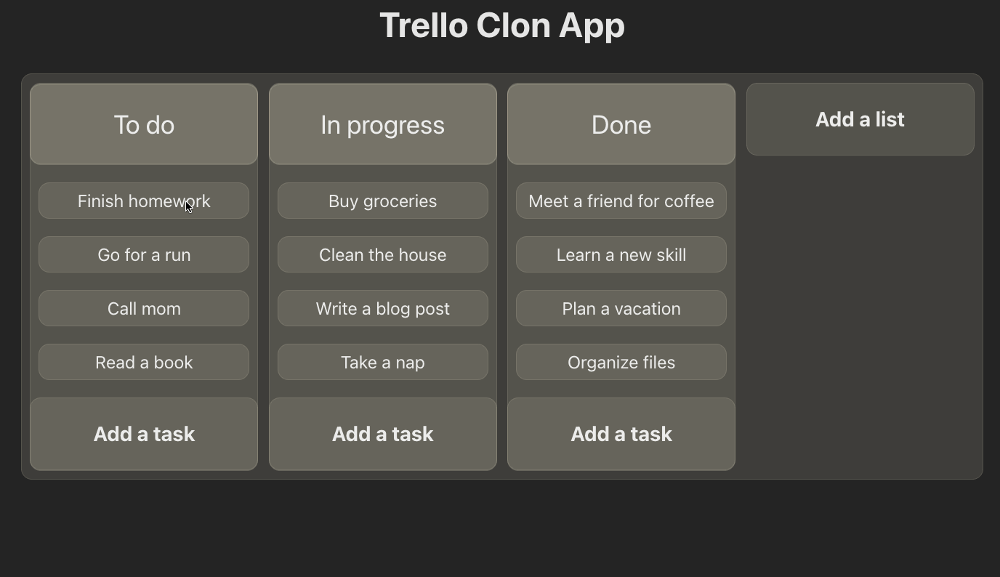

🚀 Trello Clone App
A modern, responsive Trello clone built with React and Vite. Features drag-and-drop functionality for managing tasks and lists with localStorage persistence.

✨ Features
- 🖱️ Drag & Drop: move tasks between lists and reorder them
- 💾 Auto-save: automatic persistence using localStorage
- 🧩 CRUD operations: add, edit, and delete tasks and lists
- 📱 Responsive design: desktop and mobile friendly
- ⚡ Fast performance: Vite-powered workflow
- 🧠 Clean architecture: custom hooks and modular components
🧰 Tech Stack
- Frontend: React 18, JSX
- Build tool: Vite
- Drag & Drop: react-beautiful-dnd
- Styling: CSS3, BEM methodology
- State management: React Context API + custom hooks
- Storage: localStorage with error handling
- Icons: SVG assets
🚀 Quick Start
Prerequisites
- Node.js 18+
- npm or yarn
Installation
# Clone the repository
git clone https://github.com/Ruben-Alvarez-Dev/project_trello-clon.git
# Navigate to project directory
cd project_trello-clon
# Install dependencies
npm install
# Start development server
npm run dev
The app runs at http://localhost:5173.
📦 Available Scripts
# Development server
npm run dev
# Production build
npm run build
# Preview production build
npm run preview
# Lint code
npm run lint
# Auto-commit (custom script)
npm run commit
🗂️ Project Structure
src/
app/ # Main application component
components/ # Reusable React components
hooks/ # Custom React hooks
contexts/ # React Context providers
constants/ # Application constants
helper/ # Utility functions
data/ # Initial data configuration
assets/ # Static assets (icons, images)
🧭 How to Use
- Add lists: click "Add a list" to create columns
- Add tasks: click "Add a task" within any list
- Drag & drop:
- Drag tasks between lists to change status
- Reorder tasks within the same list
- Reorder lists horizontally
- Edit: double-click on any task or list title
- Delete: click the trash icon on tasks or lists
🏗️ Architecture Highlights
Custom Hooks
useLocalStorage: localStorage synchronization with error handling
Clean Code Principles
- Single Responsibility Principle
- DRY (Don't Repeat Yourself)
- Separation of concerns between components
- Centralized constants management
Performance Optimizations
- Efficient drag-and-drop handling
- Minimal re-renders with proper state management
- Lazy loading where applicable
🚢 Deployment
Build for Production
npm run build
The build files are generated in the dist/ directory.
Deploy to Static Hosting
Can be deployed to any static hosting service:
- Netlify
- Vercel
- GitHub Pages
- AWS S3
- Any shared hosting with static file support
🤝 Contributing
- Fork the repository
- Create your feature branch (
git checkout -b feature/AmazingFeature) - Commit your changes (
git commit -m 'feat: add amazing feature') - Push to the branch (
git push origin feature/AmazingFeature) - Open a Pull Request
Commit Convention
This project follows conventional commits:
feat:new featuresfix:bug fixesrefactor:code refactoringdocs:documentation changesstyle:formatting changes
📄 License
This project is open source under the MIT License.
👤 Author
Ruben Alvarez Dev
- GitHub: @Ruben-Alvarez-Dev
- Email: ruben.alvarez.dev@gmail.com
🙏 Acknowledgments
- React Beautiful DND for drag-and-drop functionality
- Vite for the excellent development experience
- React team for the amazing framework
If you found this project helpful, please give it a star!
🧱 Architecture Overview
- Data model
- List:
{ id: string, title: string, value: string[] }wherevalueholds task ids - Task:
{ id: string, value: string }
- List:
- State management
- React Context (
DataContext) expone{ lists, setLists, tasks, setTasks } - Persistencia vía
useLocalStorage(key, initialValue)
- React Context (
- Drag & Drop
react-beautiful-dndconDragDropContext,Droppable(listas/tareas) yDraggable(listas/tareas)- Reordenación horizontal de listas y vertical de tareas; mover tareas entre listas
- Inicialización
initData()carga datos desrc/data/data.jsonenlocalStoragesi no existen
🔧 Component Responsibilities
- App
- Orquesta el estado global, inicializa datos, implementa
onDragEnd - Helpers puros: reordenar listas, reordenar tareas, mover tareas entre listas
- Orquesta el estado global, inicializa datos, implementa
- List
- Renderiza una lista con su título editable y acciones
- Mapea
list.value(ids) → tareas y renderizaTask
- Task
- Permite editar el contenido y eliminar la tarea
- AddCardorList
- Modo
forTask: crea tareas dentro de una lista - Modo
forList: crea nuevas listas
- Modo
🔄 Drag-and-Drop Flow
- Usuario arrastra lista o tarea →
onDragEnd(result)enApp - Si
type === 'list'→handleListReorder - Si
type === 'task':- Misma lista →
handleTaskReorderSameList - Listas distintas →
handleTaskMoveBetweenLists
- Misma lista →
setListspersiste en estado + localStorage
🧪 Usage Examples
// Add a list input
<AddCardorList type="forList" />
// Add a task input inside a list
<AddCardorList type="forTask" list={{ id: 'list-1', title: 'To Do', value: [] }} />
// Render a list
<List list={{ id: 'list-1', title: 'To Do', value: ['t1'] }} index={0} />
// Render a task
<Task task={{ id: 't1', value: 'Buy milk' }} index={0} />
// Persisted state
const [items, setItems] = useLocalStorage('items', []);